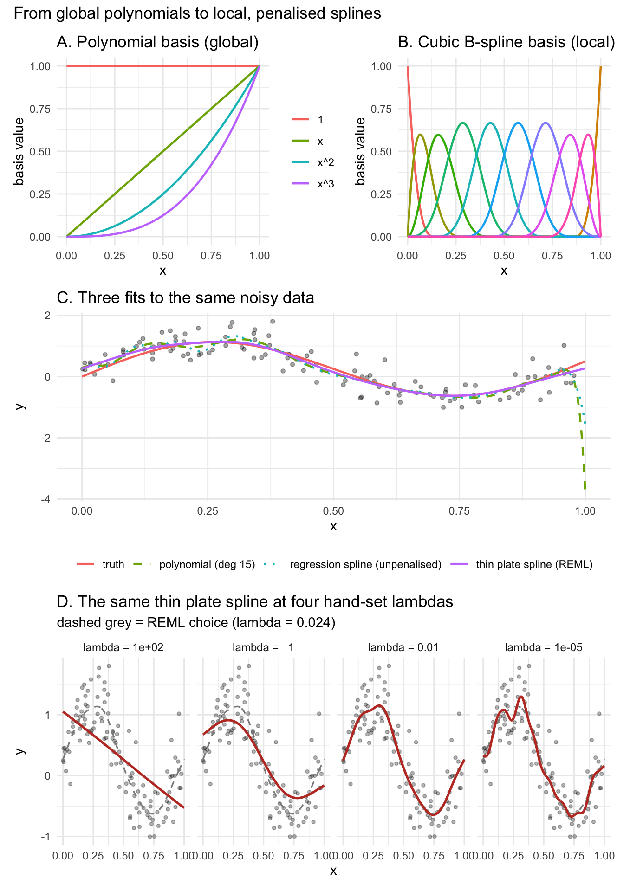
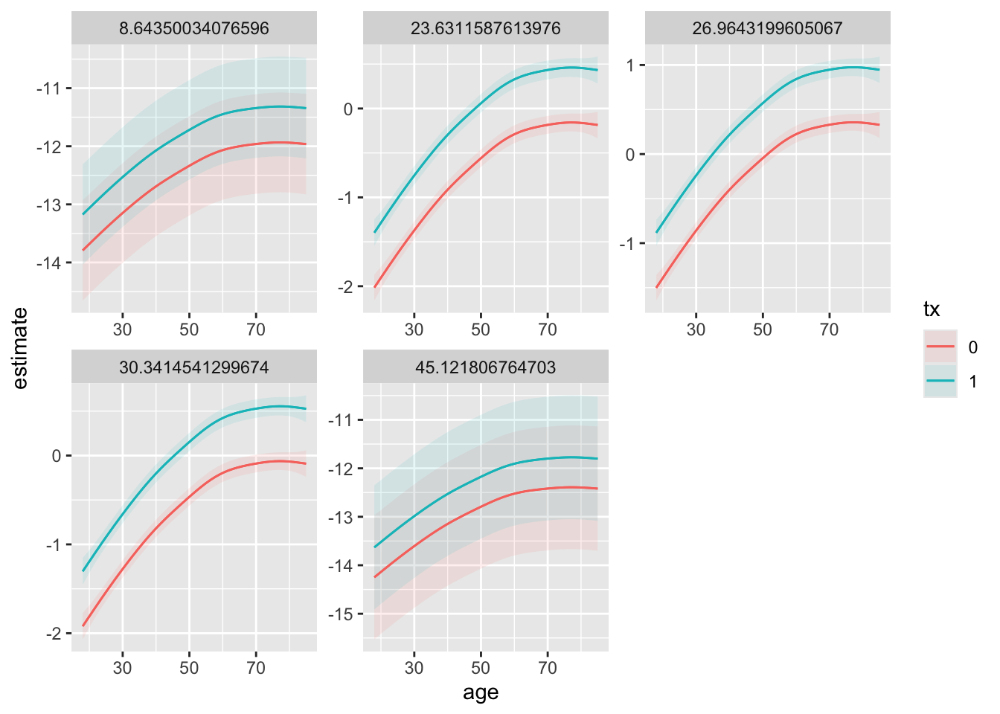
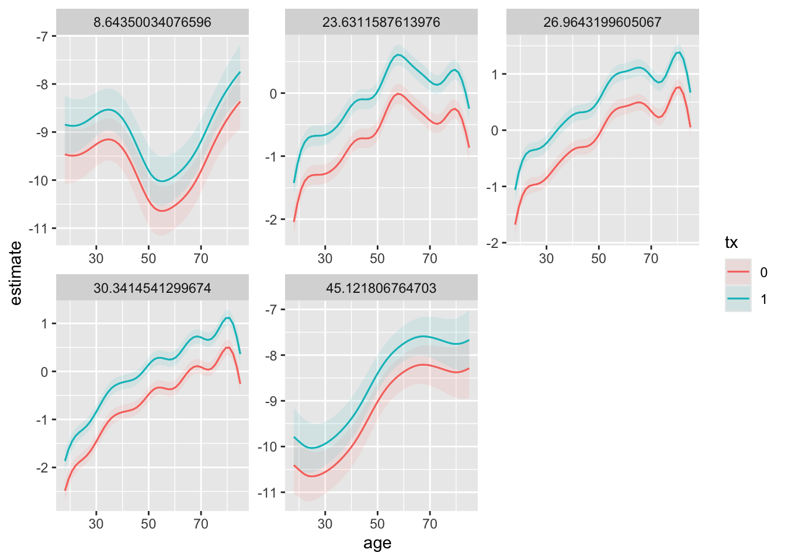
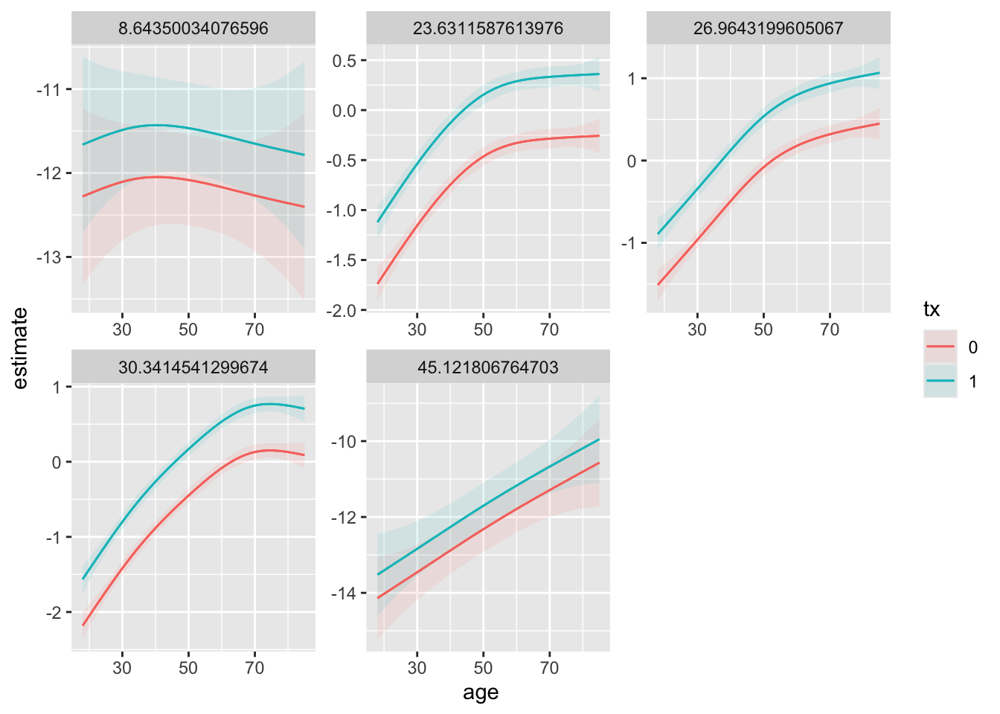
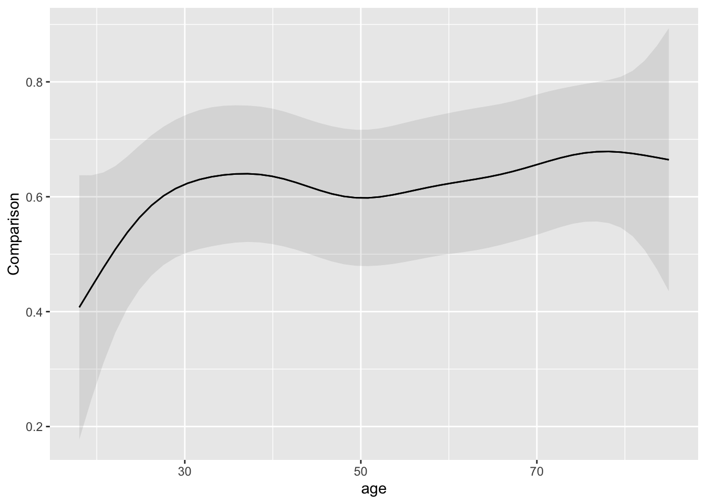
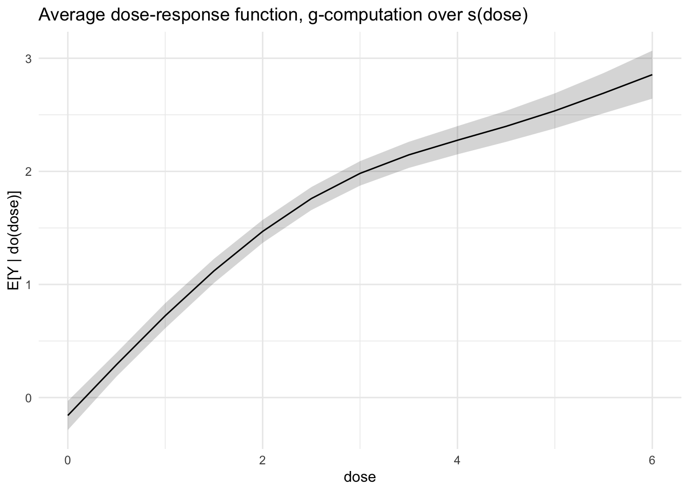

35 Appendix: mgcv
This appendix is the technical companion to the regression chapters: what a spline is, how mgcv penalises it, and — the part that matters for this book — how to build splines into a regression whose purpose is causal estimation rather than curve description. The book fits its models with brms, and brms smooth terms are constructed by mgcv machinery, so everything below about bases, penalties and model structures carries over. (brms accepts s() and t2(); te() and ti() are mgcv-only.) We work in mgcv directly because it is fast to iterate with and because its vocabulary — te(), ti(), by =, bs = "re", bs = "fs" — is what you will meet in documentation and applied papers.
Throughout, one running example: a cohort study of a binary treatment tx (say, physiotherapy) on a continuous outcome y (a work-disability score), with confounders age, bmi, sex, and region (20 levels).
35.1 Executive summary: polynomials, splines, and tensor products
Real biomedical relationships are rarely straight lines. Risk often rises gently, then steeply; dose–response curves plateau; effects of age bend at midlife. To fit such patterns we need models that can bend, and the choice of how to let them bend is an important decision in model building.
Polynomials bend globally. Adding squared and cubed terms to a regression lets the fit curve, and for mild curvature this works. The problem is that every part of the curve depends on every data point: a cluster of observations at one end of the x-range can tip the fitted line at the other end. Higher-degree polynomials oscillate near the boundaries and extrapolate badly.
Splines bend locally. A spline is built from many small, overlapping pieces, each active only in a narrow region of x. Wiggle introduced by a cluster of points stays where it belongs. Splines fit complex shapes — thresholds, plateaus, U-shapes — without disturbing parts of the curve where the data are well-behaved. This is the standard tool of modern flexible regression.
Penalised splines — the kind mgcv fits — allow plenty of flexibility, then penalise wiggliness, and let the data decide how much curvature to keep. The smoothing parameter is selected automatically (REML or GCV). Practically, you stop asking “how many knots?” and start asking “how wiggly should this be?” — and the algorithm answers.
Reach for s() first. In mgcv, s(x) fits a penalised thin plate spline — a sensible default for one covariate, and the building block for most GAMs you will write. For a smooth surface in two covariates that share a scale (latitude and longitude, two anatomical coordinates), s(x, z) works directly.
Reach for te() or ti() when scales differ or interactions matter. When you want a smooth interaction between covariates measured in different units — age in years and BMI in kg/m², for example — use a tensor product smooth, te(x, z). It builds the surface from separate one-dimensional smooths in each direction, with a separate amount of smoothing for each, so rescaling one covariate does not distort the fit. Use ti() when you want to separate the interaction from the main effects, ANOVA-style: s(x) + s(z) + ti(x, z).
te(x, z) and s(x) + s(z) + ti(x, z) make practically identical predictions; they differ in penalty structure, not basis.
te(x, z) is one smooth term with two smoothing parameters (one per marginal direction) applied to the joint basis; the main-effect and interaction parts of the surface share those penalties. s(x) + s(z) + ti(x, z) is three smooth terms, each with its own smoothing parameter, so the main effect of x, the main effect of z, and the pure interaction surface are shrunk independently.
Two consequences. When the signal is weak or one component is much smoother than the other, the decomposed form can shrink the interaction more aggressively and pull the surface toward additivity — usually desirable. And with ti() the pure interaction is a separate term in summary(), which is what you need if the question is “is there an interaction beyond the additive main effects?”. With te() that question cannot be separated from “is there any joint effect at all?”.
For prediction-driven workflows (marginaleffects plots), te() is simpler. Reach for s(x) + s(z) + ti(x, z) when you want each piece to have its own penalty, or when the interaction itself is the inferential target.
Start with
s()per covariate. Addte()orti()only when an interaction is biologically plausible and you have enough data to estimate it. Let the penalty handle wiggliness. Inspect each smooth visually before trusting it.
35.2 From polynomials to splines: a more technical exposition
A polynomial regression model is the simplest way to let the conditional mean of y bend with x:
\[E(y \mid x) = \beta_0 + \beta_1 x + \beta_2 x^2 + \cdots + \beta_p x^p\]
This is a basis expansion: we write the unknown function f(x) as a sum of known building blocks — here, the powers 1, x, x². The model is linear in β even though it is nonlinear in x.
“Linear in β” means that if we fix the data and view the fitted value as a function of the coefficients, doubling every β doubles every fitted value, and the contributions of β₀, β₁, β₂, … add up. Concretely, define new variables z₁ = x, z₂ = x², z₃ = x³, and so on. Then
\[E(y \mid x) = \beta_0 + \beta_1 z_1 + \beta_2 z_2 + \beta_3 z_3 + \cdots\]
is an ordinary multiple linear regression, with the zⱼ playing the role of predictors. The relationship between y and the original x is curved — that’s the whole point — but the relationship between y and the constructed columns zⱼ is a flat hyperplane.
This is not a notational trick; it has two concrete consequences.
Estimation is a solved problem. Because the model is linear in β, the coefficients are obtained by ordinary least squares. The same is true for splines, which is why these methods are fast and stable on large datasets.
Inference carries over. Confidence intervals for nested models rely on linearity in the parameters, not linearity in the predictors. For polynomial and spline models, the toolkit of linear-model inference applies unchanged. (Penalisation complicates this slightly — the penalty shrinks β toward zero, so frequentist standard errors get a Bayesian reinterpretation in mgcv — but the underlying machinery is still linear.)
Note
Into a linear model the parameters enter linearly; the predictors can be raw covariates, polynomial powers, log transformations, dummy variables, interaction terms, or spline basis functions. In truly nonlinear models, the parameters appear inside an exponential, a ratio, or a custom mechanistic equation.
Polynomials have well-known weaknesses. They are global: every coefficient depends on every observation, so a few points at one end of the x-range can pull the fitted curve at the other end. High-degree polynomials oscillate badly between data points. Increasing the polynomial degree to capture local detail tends to make the global fit worse, not better. Splines fix this by replacing the global building blocks with local ones. A regression spline still has the form
\[f(x) = \sum_{j=1}^{k} \beta_j \, b_j(x),\]
but each bⱼ(x) is a piecewise polynomial — typically cubic — that is non-zero only over a small range of x. The pieces are joined at locations called knots with continuity in the function and its first two derivatives, so the result is visually smooth. Because each basis function has local support, adding a knot in one region does not perturb the fit far away.
A practical question becomes: how many knots, and where? The penalised spline approach sidesteps this by using more knots than strictly needed and adding a wiggliness penalty to the objective:
\[\text{minimize} \quad \sum_{i=1}^{n}\bigl(y_i - f(x_i)\bigr)^2 \; + \; \lambda \int f''(x)^2 \, dx.\]
The first term rewards fit; the second penalises curvature. The smoothing parameter λ controls the trade-off and is chosen automatically — by REML or GCV — inside mgcv. Ordinary polynomial regression is then just the simplest, unpenalised, global case of this framework.
35.2.1 Thin plate splines: the default for s() in mgcv
When you write s(x) in mgcv, you get a thin plate regression spline by default. The thin plate spline (TPS) is the natural multivariate generalisation of the cubic smoothing spline: among all smooth functions of d variables passing close to the data, it minimises an integrated-squared-second-derivative penalty. In two dimensions the penalty is
\[\iint \bigl( f_{xx}^2 + 2 f_{xy}^2 + f_{yy}^2 \bigr) \, dx \, dy,\]
which is — literally — the bending energy of a thin metal plate forced through the data points. Hence the name.
TPS does not require the analyst to choose knot locations; in its original form it places one basis function at every data point, with the smoothing penalty doing the regularisation. Wood’s thin plate regression spline is a low-rank truncation that keeps the most informative basis functions and discards the rest, giving essentially the same statistical behaviour at a fraction of the cost.1
The TPS penalty is isotropic: it treats all input directions equivalently. For a single covariate this is harmless, but with several covariates passed into one smooth — s(x, z) — isotropy means the same notion of wiggliness is applied to both, which is sensible only when x and z are on comparable scales (latitude and longitude, say, but not age in years and BMI in kg/m²).
35.2.2 Tensor product smooths: a different construction
When covariates are on different scales or play qualitatively different roles, mgcv offers tensor product smooths via te() and ti(). These are built differently from TPS: the joint basis is formed as products of one-dimensional marginal bases, and — the key point — each marginal direction gets its own smoothing parameter and its own penalty, so smoothness in x is regulated independently of smoothness in z. The fit is therefore invariant to rescaling either covariate. te(x, z) builds the full smooth (interaction plus marginals); ti(x, z) strips out the marginal main effects, which is the right choice for the ANOVA-style decomposition s(x) + s(z) + ti(x, z) described in the executive summary.
Figure 14.1. From global polynomials to local, penalised splines.
(A) A polynomial basis of degree three over the interval [0, 1]: the constant, x, x², and x³. Each basis function is non-zero across the entire range of x, so the fitted coefficient on any one term influences the fitted curve everywhere. This is what is meant by a global basis. (B) A cubic B-spline basis on the same interval, defined by six interior knots evenly spaced across [0, 1]. Each basis function is a localised bump, non-zero only over a narrow neighbourhood of x. Changing the coefficient on one bump perturbs the fitted curve only in that neighbourhood; this is a local basis. (C) Three fits to the same simulated dataset (n = 120; true mean function f(x) = sin(2πx) + 0.5x; Gaussian noise, σ = 0.35). Grey points are the simulated observations. The dashed line is a degree-15 polynomial fitted by ordinary least squares; note the visible oscillation near x = 0 and x = 1 (this is boundary oscillation typical of high-degree polynomials). The dotted line is an unpenalised cubic regression spline with 20 basis functions, which tracks individual data points between knots. The solid red line is a penalised thin plate regression spline (s(x, bs = "tp", k = 20)) with the smoothing parameter λ chosen automatically by REML; it recovers the underlying smooth signal without chasing the noise. (D) The same thin plate spline as in panel C, but with λ fixed by hand at four contrasting values, from heavy penalisation (λ = 100) to almost none (λ = 10⁻⁵). With large λ the wiggliness penalty dominates and the fit collapses toward a straight line (over-smoothing); with small λ the penalty is negligible and the curve follows individual observations (under-smoothing). The dashed grey curve, identical across facets, is the REML-chosen fit from panel C and serves as a reference for the data-driven choice. Together, panels A–D show that splines extend polynomial regression by replacing global building blocks with local ones, and that the smoothing parameter — not the number of knots — is the practical dial controlling model complexity.
35.3 A worked sequence of models
We simulate the running example: 5000 observations; a continuous outcome y; a binary treatment tx; two continuous confounders on different scales (age in years, bmi in kg/m²) whose effects are nonlinear and interact; sex, which modifies the age curve; and region (20 levels) contributing a random-effect-like offset.
Show code
library(mgcv)
library(marginaleffects)
set.seed(1)
n <- 5000
dat <- data.frame(
age = runif(n, 18, 85), # years
bmi = rnorm(n, 27, 5), # kg/m^2 — DIFFERENT scale from age
sex = factor(sample(c("F","M"), n, TRUE)),
region = factor(sample(paste0("R", 1:20), n, TRUE)),
tx = rbinom(n, 1, 0.4)
)
# True DGP: nonlinear in age, nonlinear in bmi, age-by-bmi interaction,
# sex shifts the age curve, region adds a random-ish offset.
region_eff <- setNames(rnorm(20, 0, 0.6), paste0("R", 1:20))
dat$y <- with(dat,
0.6 * tx +
0.03 * (age - 50) - 0.0006 * (age - 50)^2 + # smooth in age
-0.04 * (bmi - 27)^2 + # smooth in bmi
0.002 * (age - 50) * (bmi - 27) + # interaction
ifelse(sex == "M", 0.3, -0.3) * 0.02 * (age-50) +# sex-modified age effect
region_eff[as.character(region)] +
rnorm(n, 0, 1)
)
dat$tx <- as.factor(dat$tx)
head(dat) age bmi sex region tx y
1 35.78908 17.97258 M R11 0 -3.52517418
2 42.93230 23.60980 M R3 0 -0.03266607
3 56.38118 24.63321 M R15 0 0.38972388
4 78.84992 32.13709 M R16 1 1.42510145
5 31.51269 24.01306 M R19 0 -1.55526304
6 78.19211 32.79925 F R4 1 -2.5485843435.3.1 One smooth per covariate
The baseline structure is one penalised smooth per continuous confounder, with the treatment as a parametric term. s(x) uses the thin plate basis by default (bs = "tp"); each smooth gets one smoothing parameter and one wiggliness penalty. This model assumes the treatment shifts the entire response surface by a constant amount — the same shift at every age, every BMI, every region.
Show code
m1 <- gam(y ~ tx + s(age) + s(bmi), data = dat, method = "REML")
plot_predictions(m1, condition = c("age", "tx", "bmi"))
Use this when you have no reason to expect the treatment effect to vary with the covariates and you want to adjust for them. It is also where any model-building sequence should start (see the model ladder below).
35.3.2 A joint smooth of two covariates: isotropic versus tensor product
You can write s(age, bmi) — a two-dimensional isotropic thin plate smooth. It uses a single λ for combined wiggliness in both directions, which assumes age and BMI are measured on the same scale: a change of 1 year and of 1 kg/m² are treated as equivalent distances. That is almost never appropriate for clinical covariates.
Show code
# OK only if the two inputs share a scale (e.g. spatial coordinates lat/lon)
m_iso <- gam(y ~ tx + s(age, bmi), data = dat, method = "REML")
plot_predictions(m_iso, condition = c("age", "tx", "bmi"))
te(age, bmi) builds the marginal smooths separately and combines them via a tensor product. Each margin gets its own smoothing parameter, so the fit is invariant to rescaling the inputs. One te() term covers the main effect of age, the main effect of bmi, and their interaction — with two λs, one per margin.
Show code
m2 <- gam(y ~ tx + te(age, bmi), data = dat, method = "REML")
plot_predictions(m2, condition = c("age", "tx", "bmi"))
Categorical confounders enter alongside: sex as a parametric term, region as a random intercept via s(region, bs = "re") (explained in the factor section below).
Show code
m2.1 <- gam(y ~ tx + te(age, bmi) + sex + s(region, bs = "re"),
data = dat, method = "REML")
Note
Choosing bases and basis dimensions inside te(). You can specify per-margin bases and basis sizes, e.g. te(age, bmi, bs = c("cr","cr"), k = c(10, 10)).
bs (“basis”) tells s(), te(), or ti() which kind of spline basis to build the smooth from. The three you will meet first:
bs = "tp"— thin plate regression spline. The default fors(). No knots to choose; mgcv picks a low-rank basis from the data.bs = "cr"— cubic regression spline. A classical penalised cubic spline with knots placed at quantiles of the covariate (or evenly, if you specify). Each basis function is a piecewise cubic, joined smoothly at the knots.bs = "re"— random effect. Not a smoother in the usual sense; treats the levels of a factor as draws from a Normal distribution, as in a mixed model.s(region, bs = "re")is a random intercept for region, not a smooth curve over region.
te() builds its joint basis as a tensor product of marginal one-dimensional bases — one per input. bs = c("cr", "cr") says: use a cubic regression spline for the age margin and for the bmi margin. There are two reasons to prefer "cr" over the default "tp" here: (i) it is much cheaper to compute; (ii) it fits the geometry of te() better. The optimality argument behind thin plate splines is isotropic — it assumes a single common notion of wiggliness across all inputs — and that argument no longer applies once the margins are separated, so switching to "cr" loses nothing conceptual and gains speed.
k is the basis dimension — the upper bound on how wiggly each margin is allowed to be before the penalty operates. k = c(10, 10) allows up to 10 basis functions for age and 10 for bmi, giving the joint surface up to 10 × 10 = 100 coefficients before penalisation. The penalty then shrinks the effective dimension down to whatever the data support; check whether k was set high enough with gam.check() or k.check(). k is a cap, not a forced degrees-of-freedom count — if the check flags it, increase it.
In plain English, te(age, bmi, bs = c("cr","cr"), k = c(10, 10)) says: build a smooth surface of age and bmi from cubic regression splines in each direction (10 basis functions each), form the pairwise products, and let REML pick a separate smoothing parameter for the age direction and the bmi direction. It is the same model class as te(age, bmi) — same function space, same interpretation — with explicit, faster marginal bases.
35.3.3 Separating the interaction: ti()
If you want main-effects-plus-interaction as separable terms — to test the interaction, or to keep the main-effect smooths interpretable in plots — use ti(), which strips the marginal main effects out of the tensor product:
Show code
m3 <- gam(y ~ tx + s(age) + s(bmi) + ti(age, bmi) +
sex + s(region, bs = "re"),
data = dat, method = "REML")The advantage over te(age, bmi): the summary() table isolates the pure interaction — its EDF and p-value are separated from the main effects, so you can read off whether the interaction matters. The fitted prediction surface is essentially the same as te()’s, so for prediction-driven workflows the two are interchangeable; for inferential reporting on the interaction, prefer the ti() form.
35.3.4 Treatment effect modification: by = smooths
If you suspect the treatment effect depends on, say, age, let each arm have its own age curve:
Show code
m4 <- gam(y ~ tx + s(age, by = tx) + s(bmi) + ti(age, bmi) +
sex + s(region, bs = "re"),
data = dat, method = "REML")s(age, by = tx) fits a separate smooth of age for each level of tx. The by smooths are centred (sum-to-zero), so they cannot carry the level shift between arms — that is why the parametric tx + term stays in the formula. Without it, the two age curves would be forced to have the same average level, which is almost never what you want.
The interpretation: the difference between the two age curves at any given age is the treatment effect at that age. With marginaleffects you extract this with avg_comparisons(m4, variables = "tx", by = "age") or plot it with plot_comparisons(m4, variables = "tx", condition = "age") (worked example below).
Two technical variants worth knowing:
- Shared smoothness across arms. When
txis a factor,by = txfits one smooth per level, each with its own smoothing parameter. This is usually what you want. To force the curves to share one smoothing parameter (pooled wiggliness, less flexibility per arm), give the smooths a commonid:s(age, by = tx, id = 1). - Reference curve plus difference curve. If you make
txan ordered factor,by = txfits smooths only for the contrasts with the reference level, so you must add the reference curve yourself:y ~ txo + s(age) + s(age, by = txo). Thes(age):txo1term is then the smooth difference between the arms — directly interpretable as the age-varying treatment effect, with its own penalty shrinking it toward zero (toward “no effect modification”).
Check the class of the by variable
The three formulas tx + s(age, by = tx), txo + s(age) + s(age, by = txo) and tx + s(age) + s(age, by = tx) are not stylistic variants of one model. Which one is correct is decided by class(tx), because s(age, by = tx) is a differently constructed term in each case.
- Unordered factor (
tx <- factor(tx)): one centred smooth per level. The centring means no curve can carry its own arm’s level, so the parametrictxis required; and because every level already has a curve,s(age)must be omitted. This ism4above. - Ordered factor (
txo <- ordered(tx)): smooths for the contrasts with the reference level only. The reference arm has no curve of its own, sos(age)and the parametric term are both required — variant 2 above. - Numeric (
txleft as a 0/1 indicator): a varying-coefficient term,tx× f(age) — a single curve multiplied by the by variable, and not centred.s(age)is now required, because without it thetx = 0arm is modelled as flat in age. But the parametrictxbecomes redundant, becausetx× the constant part of f is already in the term’s unpenalised null space. Include it anyway and the design is rank-deficient:gam()reportsRank: 20/21and returns thetxcoefficient as0with anNaNstandard error.
The numeric case is also the one that fails quietly in the other direction. Fitting tx + s(age, by = tx) with numeric tx — the formula that is correct for a factor — leaves the untreated arm with no age relation at all. On a simulation whose true effect at ages 45, 65 and 85 is −20.0, −13.0 and −6.0 mmHg, that model returns −29.6, −8.2 and +16.2: the sign is wrong at the top of the age range, and no diagnostic in the fit points at the cause.
brms builds its s() terms with the same mgcv machinery, so all of the above carries over. What differs is the failure mode of the rank-deficient numeric case: gam() detects the aliasing and drops the coefficient, whereas brms keeps both parameters and identifies them only through their prior, and only as a sum. Marginal contrasts from avg_comparisons() are unaffected, because they depend only on that sum, but the tx coefficient no longer means anything on its own and the ridge in the posterior makes sampling harder. Chapter 21 uses the unordered-factor form for this reason.
If the treatment effect varies over the joint distribution of age and bmi — treatment helps young, low-BMI patients more, in a way that does not factor into “depends on age” plus “depends on bmi” — add by = tx to the interaction terms as well:
Show code
m5 <- gam(y ~ tx + s(age, by = tx) + s(bmi, by = tx) +
ti(age, bmi, by = tx) +
sex + s(region, bs = "re"),
data = dat, method = "REML")
# or, more compactly, one arm-specific surface:
m6 <- gam(y ~ tx + te(age, bmi, by = tx) +
sex + s(region, bs = "re"),
data = dat, method = "REML")m6 fits a separate age × bmi surface for each treatment arm. Powerful, but expensive in degrees of freedom — you need a lot of data, especially in the smaller arm, before this is identifiable. A conceptually equivalent alternative is to fit the two arms separately and compare predictions; doing it explicitly forces you to confront the per-arm sample size and is sometimes clearer to report. In a target trial emulation the separate-fits version corresponds to the g-computation style of outcome modelling; m1 is the outcome-regression-with-treatment-indicator style.
35.4 Mixing factors into smooths: by =, bs = "re", bs = "fs"
There are three ways to combine a factor with a smooth, and they make different statistical assumptions.2 by = (above) fits fixed, freely-estimated per-level curves; bs = "re" treats factor levels as parametric random effects; bs = "fs" fits a full random curve per level. The choice is consequential for causal work, because two of the three apply shrinkage that you must keep away from the treatment contrast (next section).
35.4.1 bs = "re": parametric random effects
Show code
# random intercept by region
mre1 <- gam(y ~ s(age) + s(bmi) + sex + s(region, bs = "re"),
data = dat, method = "REML")
# random slope of age within region
mre2 <- gam(y ~ s(age) + s(bmi) + sex +
s(region, bs = "re") + s(age, region, bs = "re"),
data = dat, method = "REML")s(group, bs = "re") is equivalent to a Gaussian random intercept: levels are i.i.d. draws from N(0, σ²), with σ² controlled by one smoothing parameter. s(x, group, bs = "re") gives random slopes (still parametric — linear in x). gam.vcomp(model) reports the variance components on a familiar scale.
Note
Translation to brms.
| mgcv term | Meaning | brms equivalent |
|---|---|---|
s(age) |
smooth of age | s(age) |
s(bmi) |
smooth of bmi | s(bmi) |
sex |
parametric fixed effect | sex |
s(region, bs = "re") |
random intercept by region | (1 \| region) |
s(age, region, bs = "re") |
random slope of age by region | (0 + age \| region) |
The first three lines are immediate. The last two need explanation.
bs = "re" is mgcv’s way of embedding a random effect inside the GAM machinery: factor levels are draws from a Normal distribution with an estimated variance — the lme4/brms random-effects formulation. So s(region, bs = "re") ↔︎ (1 | region) and s(age, region, bs = "re") ↔︎ (0 + age | region).
The choice between (0 + age | region) and (age | region) matters. (0 + age | region) is a random slope only — the literal translation of s(age, region, bs = "re") on its own. (age | region) adds a random intercept and a correlation parameter between intercept and slope.
The mgcv model above has s(region, bs = "re") and s(age, region, bs = "re") as two separate terms, whose variances are estimated independently with no correlation parameter — uncorrelated by construction. The faithful brms translation is therefore
y ~ s(age) + s(bmi) + sex + (1 | region) + (0 + age | region)
or equivalently (age || region). If you want the intercept–slope correlation (which mgcv cannot easily express), write (1 + age | region).
What changes when you cross from mgcv to brms:
Priors. brms puts default priors on everything. Inspect them with prior_summary() and consider weakly informative alternatives for the smoothing variances and random-effect SDs (student_t(3, 0, 2.5) is a common choice).
Smoothing parameters become variances. mgcv’s λ is, mathematically, a ratio of variances. brms estimates those variances directly, with their own posterior distributions (summary() under Smooth Terms). Conceptually identical, parameterised differently.
REML disappears. brms is fully Bayesian — no REML/ML choice; the joint posterior covers fixed effects, smooth coefficients, smoothing variances, and random-effect variances simultaneously. This is one reason brms suits GAMs with random effects: the partial-pooling logic is unified across all components.
A caveat: random-slope models are sensitive to how the covariate is centred and scaled. If age is on its raw scale (18–85), the random-slope SD has a very different interpretation — and very different prior implications — than if age is centred or standardised. This matters more in brms than in mgcv, because brms default priors assume reasonably standardised predictors. Centre age (subtract the mean, or a reference value such as 50) before fitting; likewise bmi.
35.4.2 bs = "fs": factor smooths (random curves)
Show code
# A separate SMOOTH of age for each region, sharing one wiggliness penalty,
# with the curve-level offsets shrunk toward zero (random-effect-like).
mfs <- gam(y ~ s(age, region, bs = "fs") + s(bmi) + sex,
data = dat, method = "REML")
plot_predictions(mfs, condition = c("age", "region"))s(x, fac, bs = "fs") produces one smooth of x per level of fac, all sharing a single smoothing parameter; levels with little data are pooled toward a common shape. The term is fully penalised, including its per-level intercepts, and is therefore not centred — no sum-to-zero constraint — so it carries its own level offsets. Two consequences follow. First, written as above, each regional curve is a stand-alone fit; if you want the regional curves to be deviations from a common shape, write s(age) + s(age, region, bs = "fs"). Second, the per-level basis is set via xt, not bs: s(age, region, bs = "fs", xt = "cr") uses cubic regression splines per region (bs = c("cr", "fs") is not valid s() syntax).
How does bs = "fs" differ from by =?
s(age, by = f) + f |
s(age, f, bs = "fs") |
|
|---|---|---|
| Per-level age curves | Yes | Yes |
| Smoothing parameter | One per level | One shared across levels |
| Centring | Each smooth centred (sum-to-zero) | Not centred |
Need f + main effect? |
Yes (carries the level shifts) | No (the term carries its own) |
| Level-contrast shrunk? | No | Level offsets shrunk (as random effects) |
| Wiggliness pooled across levels? | No (unless id=) |
Yes |
bs = "fs" was designed for factors with many exchangeable levels — patients in a longitudinal study, regions, hospitals — where partial pooling across levels is the point. That is its home ground; by = is for factors with few, fixed, individually interesting levels.
Can the treatment enter a factor smooth? s(age, tx, bs = "fs") fits one age curve per arm with a shared roughness penalty. The shrinkage in this term operates on the wiggliness of the two curves and on their offsets from a common centre — it does not pool the estimated treatment contrast toward zero the way bs = "re" on tx would (next section). If the arms genuinely differ, the term recovers the difference. But with two levels you are using a tool built for many: there is little to pool, the result is usually close to s(age, by = tx, id = 1), and because the term carries its own (penalised) level offsets you should not also include a parametric tx + main effect — the treatment contrast would then be split between an unpenalised fixed term and shrunken offsets, which muddles interpretation. With a two-level treatment factor, tx + s(age, by = tx) is the more transparent and more standard choice (with tx left numeric that formula is a different and wrong model — see the callout above); bs = "fs" earns its keep when the treatment-defining factor has many levels (several therapy intensities, timing categories) where pooling roughness is genuinely informative.
To combine a binary treatment with region-level curves, keep the two jobs in separate terms:
Show code
gam(y ~ tx + s(age, by = tx) +
s(age, region, bs = "fs") +
s(bmi) + sex,
data = dat, method = "REML")tx— fixed average treatment effect;s(age, by = tx)— fixed effect modification: the age curves of the two arms may differ in shape, with no shrinkage between arms;s(age, region, bs = "fs")— regional deviations, with shrinkage across regions;s(bmi),sex— adjustment covariates.
This separates “what we want to estimate” (the treatment effect, possibly age-modified) from “what we want to control for” (regional grouping with partial pooling), and each part gets the appropriate statistical treatment. The alternative — building an interaction factor interaction(tx, region) and putting it into one bs = "fs" term — forces the regional deviations to be estimated separately in each arm and halves the per-cell sample size, encoding an assumption (that regional variation itself depends on treatment) you usually have no reason to hold.
Caution
The marginal bases inside te(), ti(), or t2() must be univariate smoother classes — typically "tp", "cr", "ps", or "re". The "fs" class is itself a smooth-crossed-with-factor construction and cannot serve as a margin; write a factor margin as bs = "re" (in current mgcv a factor margin requested as "fs" is silently constructed as a random-effect margin).
Related: when a factor enters a tensor product as an "re" margin — say te(age, bmi, sex, bs = c("tp","tp","re")) — the factor’s marginal main effect is contained in the te() term and subject to the random-effect penalty, i.e. shrunk toward zero along with the interaction deviations. If you do not want the main effect of sex shrunk, add it as a parametric term (+ sex); the unpenalised term then carries the main effect and the tensor product carries the shrunken deviations.
35.4.3 Syntax reference
| Term | What it fits | Notes |
|---|---|---|
s(x) |
penalised curve in x | default bs = "tp" |
s(x, z) |
isotropic 2-D surface | same-scale inputs only |
te(x, z) |
scale-invariant surface: main effects + interaction | one λ per margin |
ti(x, z) |
pure interaction only | pair with s(x) + s(z) |
f + s(x, by = f) |
separate curve per level of f | centred; parametric f required; do not add s(x) |
s(x) + s(x, by = fo) |
reference curve + difference curves (fo ordered) |
difference smooth shrunk toward zero |
s(x) + s(x, by = num) |
one curve scaled by a numeric num (varying coefficient) |
not centred; s(x) required; adding parametric num makes the design rank-deficient |
s(f, bs = "re") |
random intercept for factor f | ≈ (1 \| f) |
s(x, f, bs = "re") |
random slope of x across f | linear in x |
s(x, f, bs = "fs") |
one curve per level, shared λ, shrunken offsets | many-level factors; per-level basis via xt = |
te(x, z, f, bs = c("tp","tp","re")) |
surface with random level-deviations | needs dense data per neighbourhood; add + f to keep f’s main effect unshrunk |
35.5 Keep the treatment effect unpenalised
The treatment is the estimand of the study. It should not enter the model in any form that shrinks the treatment-effect contrast itself: not as s(tx, bs = "re"), not as an "re" margin in a tensor product. (A factor smooth s(age, tx, bs = "fs") pools the roughness of the arm curves, not the contrast between them — acceptable, with the two-level caveats above.) A continuous exposure is different: there the estimand is the whole dose–response curve, and a penalised s(dose) is the appropriate way to estimate a curve — the penalty regularises its shape, not its existence.
Note
Why not tx as a random effect? A random effect on a two-level factor estimates two coefficients as draws from N(0, σ²ₜₓ); with the usual constraints this is one effective parameter — the contrast between arms — shrunk by approximately
\[\text{shrinkage} \approx \frac{\sigma^2_{\text{within}} / n}{\sigma^2_{\text{within}} / n + \sigma^2_{\text{tx}}}\]
where σ²within is the residual variance and n the per-arm sample size. Between the extremes (no shrinkage when the true effect is large; complete shrinkage when σ̂²ₜₓ = 0) you get partial shrinkage. The problem is how σ²ₜₓ is estimated: with k factor levels the variance is identified from k − 1 between-level differences, and with k = 2 that is a single number. Two consequences:
Boundary estimates are common. REML variance estimates are bounded below at zero; when the treatment effect is modest relative to within-arm noise, σ̂²ₜₓ = 0 is the typical outcome, and the model removes the treatment contribution entirely.
The estimator is unstable. With one degree of freedom driving the variance estimate, σ̂²ₜₓ flips between near-zero and large values under small perturbations of the data, and standard errors do not achieve nominal coverage near the boundary.
For nuisance grouping factors (regions, providers) shrinkage is a feature: no scientific stake rides on any particular region’s deviation, and with many levels the variance is well identified. For the exposure it is a bias whose direction is determined by sample size — conceptually misaligned with a design built to estimate that very contrast. Random-effect treatment of a factor is appropriate when the levels are plausibly exchangeable draws from a population and there are enough levels to identify the variance; both conditions fail for a two-level treatment indicator.
35.6 From adjusted GAM to causal contrast
A flexible, well-adjusted GAM is the outcome model; it is not yet a causal estimate. Four points connect the two.
- The coefficient on
txis a conditional association. It is the effect of treatment given the flexibly modelled covariates, and only under the model’s homogeneity assumptions. For a marginal (population-averaged) effect — the ATE — use g-computation: predict counterfactual outcomes undertx = 1andtx = 0for everyone in the sample, then average and contrast.marginaleffects::avg_comparisons()does this directly ongam/bamfits (worked example below), consistent with the book-wide convention of reporting effects as model predictions rather than coefficients. - Flexibility is not confounding control. No amount of spline flexibility repairs a missing confounder, adjustment for a post-treatment variable, or collider stratification. Draw the DAG first; the DAG decides what goes into the model, the splines decide how it goes in. What splines do buy, causally, is protection against residual confounding from mis-modelled functional form: a confounder adjusted for linearly when its effect is curved is only partly adjusted for, and the leftover association contaminates the treatment estimate. Since spline coefficients were never going to be interpreted directly, this protection costs nothing under the marginal-effects convention.
- If treatment effect modifiers are present, model them. Otherwise the conditional
txcoefficient assumes a constant effect across age, bmi and region, and even the g-computed ATE averages over heterogeneity you have not examined.s(age, by = tx)plusavg_comparisons(..., by = "age")is the standard pattern. - When the ATE must survive a sceptical reviewer, use cross-fitting. Penalised fits have regularisation bias, and the
summary()standard error ontxdoes not account for having estimated the nuisance structure flexibly. Doubly robust, cross-fitted estimators (AIPW, TMLE) are the defensible route; the GAM becomes one nuisance learner among several (last section).
35.6.1 Worked example: from fit to ATE
Show code
m_ate <- gam(y ~ tx + s(age, by = tx) + s(bmi) + sex + s(region, bs = "re"),
data = dat, method = "REML")
avg_comparisons(m_ate, variables = "tx")
Estimate Std. Error z Pr(>|z|) S 2.5 % 97.5 %
0.618 0.0296 20.9 <0.001 319.1 0.56 0.676
Term: tx
Type: response
Comparison: 1 - 0avg_comparisons() predicts every observation’s outcome under tx = 1 and under tx = 0, averages both counterfactual columns over the sample, and reports the contrast — g-computation on the response scale, with a delta-method interval. (The g-computation chapter does the same with a brms fit, where the contrast comes with a full posterior.) Compare the estimate with the simulation’s true effect of 0.6.
The age-varying effect, from the same fit:
Show code
plot_comparisons(m_ate, variables = "tx", condition = "age")
35.6.2 A continuous exposure: the dose–response curve
With a continuous exposure the estimand is a curve — the average dose–response function: the population mean outcome if everyone’s dose were set to d, traced over d. The exposure enters as a smooth, confounders enter as smooths, and g-computation traces the curve:
Show code
set.seed(42)
n2 <- 1500
dd <- data.frame(age = runif(n2, 18, 85))
dd$dose <- pmax(0, 2 + 0.08 * (dd$age - 50) + rnorm(n2, 0, 1.5)) # age confounds dose
dd$y <- with(dd, 1.5 * log1p(dose) +
0.03 * (age - 50) - 0.0005 * (age - 50)^2 + rnorm(n2, 0, 1))
m_dose <- gam(y ~ s(dose) + s(age), data = dd, method = "REML")
# ADRF: set everyone's dose to d, average, repeat over a grid
adrf <- avg_predictions(m_dose, variables = list(dose = seq(0, 6, by = 0.5)))
ggplot(adrf, aes(dose, estimate)) +
geom_ribbon(aes(ymin = conf.low, ymax = conf.high), alpha = 0.2) +
geom_line() +
labs(x = "dose", y = "E[Y | do(dose)]",
title = "Average dose-response function, g-computation over s(dose)") +
theme_minimal()
Note the grid stops at 6 although a few observations reach higher doses: report the curve only where the data have support. A penalised smooth will draw a confident-looking line into regions with two observations — there the shape is determined by the penalty, not the data. Check the exposure’s distribution (and its overlap across confounder strata — positivity) before choosing the reported range.
35.6.3 Splines in causal regression: a working checklist
- DAG first. Decide the adjustment set before deciding functional forms. Splines change how a confounder is adjusted for, never whether it should be.
- Smooth every continuous confounder by default. A mis-modelled confounder leaves residual confounding that no diagnostic on the treatment coefficient will reveal. The penalty makes this nearly free: if the true relation is linear, the smooth is shrunk back to a line.
- Keep the treatment term unpenalised. Binary or categorical exposure: parametric term. Continuous exposure:
s(dose)is right — the estimand is the curve — but neverbs = "re"on the exposure. - Decide effect modification a priori. With flexible models and any meaningful sample size, something will look like effect modification through sampling variability alone. Choose before fitting whether modification by age or bmi is plausible enough to spend the degrees of freedom on; encode it with
by = tx, and if the answer is no, the constant-effect model is the principled stopping point. - Report effects by g-computation, not coefficients.
avg_comparisons()for an ATE,avg_comparisons(..., by = )orplot_comparisons()for modified effects,avg_predictions()over an exposure grid for a dose–response curve. Spline coefficients are uninterpretable, and under this convention they never need to be interpreted. - Respect support. Restrict reported grids to covariate regions with data; check positivity where overlap is doubtful. Smooths extrapolate on the penalty’s terms, not the data’s.
- Check the basis dimension.
gam.check()/k.check(); raisekwhere flagged.kcaps flexibility, the penalty sets the effective flexibility below the cap. - Centre continuous covariates that enter interactions (e.g. age at 50, bmi at 27). It costs nothing in mgcv and prevents pathologies later, when the same model moves to
brms, whose default priors assume roughly centred predictors. - REML for the final fit; ML for structure comparison (see the ladder below).
- If the inference itself must be robust to flexible nuisance modelling, move to cross-fitted doubly robust estimation (next section) with the GAM as one candidate learner.
35.7 A practical model ladder
For the running example — establishing the effect of tx with flexible adjustment — a defensible progression is:
tx + s(age) + s(bmi) + sex + s(region, bs = "re")— the average treatment effect with a sensibly adjusted baseline.tx + s(age, by = tx) + s(bmi) + sex + s(region, bs = "re")— treatment effect varying smoothly with age, the most plausible single source of effect modification.tx + s(age, by = tx) + s(bmi, by = tx) + ti(age, bmi) + sex + s(region, bs = "re")— effect modification by age and bmi, with the age × bmi interaction common across arms.tx + s(age, by = tx) + s(age, region, bs = "fs") + s(bmi) + sex— fixed treatment effect with smooth age modification, plus partially pooled regional deviations in the age curve.
Compare the rungs with AIC() on fits estimated with method = "ML", then refit the chosen structure with method = "REML" for reporting:
Show code
m1a <- gam(y ~ tx + s(age) + s(bmi) + sex + s(region, bs = "re"),
data = dat, method = "ML")
m2a <- update(m1a, . ~ . - s(age) + s(age, by = tx))
m3a <- update(m2a, . ~ . - s(bmi) + s(bmi, by = tx) + ti(age, bmi))
AIC(m1a, m2a, m3a)The switch to ML matters: REML is for variance-component estimation and is not comparable across models with different fixed-effect structures. And the checklist’s point 4 applies with force here — the ladder is for choosing among pre-specified candidates, not for climbing until something looks significant.
For large datasets, bam() replaces gam() with the same formula syntax and much better scaling:
Show code
m_full <- bam(
y ~ tx # exposure (unpenalised)
+ s(age, by = tx) # age-modified treatment effect
+ te(age, bmi, bs = c("cr","cr"), k = c(10, 10)) # confounder surface
+ sex # parametric confounder
+ s(age, region, bs = "fs", k = 8), # region-specific age curves (pooled)
data = dat,
method = "fREML",
discrete = TRUE,
nthreads = 4
)te(age, bmi)rather thans(age, bmi)because the units differ;by = txrather thanbs = "fs"for the treatment because its two levels are fixed and individually of interest;bs = "fs"forregionbecause its levels are many and exchangeable;fREML+discrete = TRUEis the fast large-data pathway;- the ATE still comes from
avg_comparisons(m_full, variables = "tx"), not from thetxrow of the summary table.
35.8 When the GAM summary is not enough: cross-fitting and doubly robust estimation
The step from “a flexible regression fit” to “a valid causal estimate with calibrated uncertainty” is bigger than it looks. Suppose you want the ATE of physiotherapy on work disability. The classical workflow — fit an adjusted regression, read off the treatment estimate and its interval — works when the regression is correctly specified. A GAM gets you much closer to correct specification than a linear model, but it introduces a new problem: penalised splines are biased estimators of the conditional mean. The penalty trades bias for variance, and the bias does not vanish at the root-n rate. When a biased nuisance estimate is plugged into a downstream effect estimate, the bias contaminates the effect estimate too, and the interval on the treatment term in summary() is no longer calibrated for the causal question. The same applies, more strongly, to machine-learning regressions (random forests, boosting) used as nuisance models. The doubly robust, cross-fitted machinery was built to recover valid inference in this setting.
35.8.1 The doubly robust idea: AIPW
The augmented inverse probability weighted (AIPW) estimator combines two models:
- an outcome model: μ̂(x, a) = E[Y | X = x, A = a] — predicted outcome from confounders and treatment;
- a treatment model (propensity score): π̂(x) = P(A = 1 | X = x).
The AIPW estimator of the ATE has the form
\[\widehat{\text{ATE}} = \frac{1}{n} \sum_{i=1}^{n} \left[ \hat{\mu}(X_i, 1) - \hat{\mu}(X_i, 0) \right] + \text{IPW correction term}\]
The correction term repairs residual bias in μ̂ using information from π̂. The “doubly robust” name refers to a remarkable property: the estimator is consistent if either μ̂ or π̂ is consistent — you do not need both. In applied work neither model is ever exactly right, but one usually captures the bulk of the structure.
That property alone does not deliver valid intervals. For that you also need to prevent the nuisance models from being evaluated on the data they were fitted to.
35.8.2 Cross-fitting
If μ̂ and π̂ are fitted on the same data used to compute the AIPW estimate, the fitted values are over-fitted, which biases the estimator and shrinks its standard errors. Flexible learners overfit at rates that break the inferential guarantees. Cross-fitting removes the problem by splitting the data into K folds (typically 5 or 10) and, for each fold:
- fit μ̂ and π̂ on the other K−1 folds;
- predict on the held-out fold only;
- compute the AIPW contributions on the held-out fold from those out-of-fold predictions.
Averaging across folds yields an estimator with root-n convergence and an asymptotically normal sampling distribution, under conditions that let the nuisance models converge much more slowly (n^(1/4) rates suffice). This is the core of double/debiased machine learning;3 the same device underlies TMLE.
35.8.3 TMLE versus AIPW
TMLE — targeted maximum likelihood estimation (van der Laan and colleagues) — refines the same idea. Where AIPW adds a correction term to the outcome-model average, TMLE updates the outcome model itself using information from the propensity score, then takes the plain average from the updated model. The two have the same asymptotic properties; TMLE often behaves somewhat better in finite samples and respects range constraints on the outcome (predicted probabilities stay in [0, 1]). For most applied purposes the choice is taste.
35.8.4 SuperLearner: the ensemble layer
Both AIPW and TMLE need μ̂ and π̂ from somewhere. Rather than commit to one learner, SuperLearner fits several candidates (a GLM, a GAM, a random forest, gradient boosting) and weights them into an ensemble by cross-validated stacking; the ensemble is then plugged into AIPW/TMLE as the nuisance estimator. This hedges against learner misspecification and is the default workflow in the tmle3/sl3 ecosystem. Your GAM is one candidate in this stack — a good one, since splines handle the moderately complex confounder–outcome relationships typical of epidemiology — but the inference no longer relies on it being uniquely correct.
35.8.5 R packages
tmle3/sl3(van der Laan group). Most general; AIPW, TMLE, longitudinal extensions. Steep learning curve.lmtp(Williams, Díaz). Built around longitudinal modified treatment policies; handles point-treatment ATEs as a special case and is the natural home once a target-trial specification involves sequential treatment. Built-in SuperLearner integration.DoubleML(Bach et al.). Cross-fitted DML with a clean API for static settings; vocabulary leans econometric (partial effects) rather than epidemiological.
A point-treatment ATE in lmtp is estimated as a contrast of two counterfactual population means, each obtained under a static shift (tx coded 0/1):
Show code
library(lmtp)
learners <- c("SL.mean", "SL.glm", "SL.gam", "SL.ranger")
covars <- c("age", "bmi", "sex", "region")
fit_on <- lmtp_tmle(dat, trt = "tx", outcome = "y", baseline = covars,
shift = static_binary_on, # everyone treated
outcome_type = "continuous",
learners_outcome = learners, learners_trt = learners,
folds = 10)
fit_off <- lmtp_tmle(dat, trt = "tx", outcome = "y", baseline = covars,
shift = static_binary_off, # no one treated
outcome_type = "continuous",
learners_outcome = learners, learners_trt = learners,
folds = 10)
lmtp_contrast(fit_on, ref = fit_off) # ATE, SE and CI from the cross-fitted influence functionUnder the hood: 10-fold cross-fitting; each fold’s μ̂ and π̂ built from a SuperLearner ensemble; TMLE update; influence-function-based standard error. The result is a calibrated 95% interval for the ATE — the kind of quantity a gam() summary table cannot supply.
Warning
Computational cost is high. With 10 folds and a library of 4–5 learners, expect runtimes of minutes to hours on registry-sized data. Plan accordingly.
These methods do not remove unmeasured confounding. They give valid inference under the causal assumptions (exchangeability, positivity, consistency); they do not check those assumptions. The DAG work is as load-bearing as ever — this is better machinery downstream of it, not a substitute.
The design layer comes first. In a target trial emulation (see the target-trial-emulation chapter), the protocol — eligibility, time zero, grace periods — determines the estimand. AIPW/TMLE estimates that estimand more efficiently and with better-calibrated inference; it cannot repair a mis-specified design.
Do not expect a single number to be the answer. Valid causal estimation layers separate choices — design, identification, nuisance estimation, inference — and cross-fitted DR estimators keep those layers separate. A regression summary table conflates them, which is why the treatment p-value from a bam() fit should not be presented to a referee as a causal answer.
For an entry point into the literature: Causal Inference: What If (Hernán & Robins, free online) for the identification side; Targeted Learning (van der Laan & Rose) for the estimation side; and the double machine learning paper for the cross-fitting argument.4
Wood SN, “Thin plate regression splines,” J R Stat Soc Series B Stat Methodol 2003;65:95-114 (DOI).↩︎
Pedersen EJ, Miller DL, Simpson GL, Ross N, “Hierarchical generalized additive models in ecology: an introduction with mgcv,” PeerJ 2019;7:e6876 (DOI).↩︎
Chernozhukov V, Chetverikov D, Demirer M, Duflo E, Hansen C, Newey W, Robins J, “Double/debiased machine learning for treatment and structural parameters,” Econom J 2018;21:C1-C68 (DOI).↩︎
Chernozhukov V, Chetverikov D, Demirer M, Duflo E, Hansen C, Newey W, Robins J, “Double/debiased machine learning for treatment and structural parameters,” Econom J 2018;21:C1-C68 (DOI).↩︎